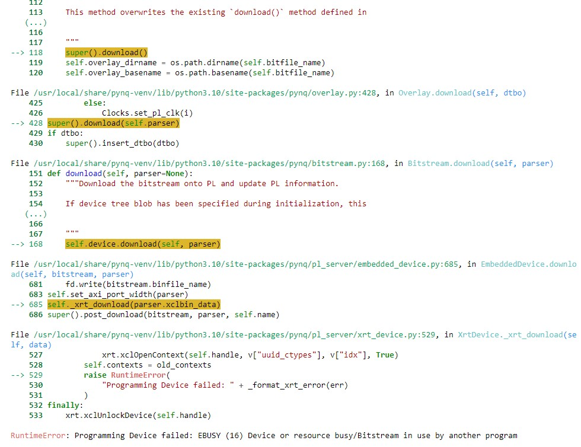

Frequently Asked Questions
- Xilinx Development and Demonstration Set Up Errors
- Accessing the Jupyter Notebooks
- Network Setup Errors/Issues
- Network Setup Errors/Issues
Xilinx Development and Demonstration Set Up Errors
Firefox says "Your Computer Clock is Wrong" which prevents you from connecting securely.
Likely, your NTP service is inactive and you can use the "timedatectl" to see its status.
Solution:
Make sure you are on a non-restricted network. Run the following commands to update the time:
sudo timedatectl set-timezone America/Denver
sudo timedatectl set-ntp false
sudo timedatectl set-ntp trueAccessing the Jupyter Notebooks
Cannot connect to the notebook.
The IP address may have changed, note that the ip address will differ from network to network.
Solution:
Ensure that your KRIA-SOM board and computer are connected to the same network.
Repeat the steps found on Find Your Board's IP Address with OLED Screen and use KRIA-SOM UART Setup to troubleshoot
Programming Device failed
More than one notebook may be trying to run at a time.
Solution:
Shutdown and close all running notebooks you are not using. In the top left corner of the notebook, Kernel > Restart & Clear Output and then rerun the notebook.
Network Setup Errors/Issues
I Don't See the IP Address on the OLED
Solution:
- It takes approximately 90 seconds for the board to startup and connect to the wifi and output the IP address. You should wait at least 3x that time to be sure. So have you waited ~4min30 since you powered on the board??
- Is the wifi dongle securely attached? Is the OLED securely attached? Disconnect, make sure they are good, and then reboot the machine by disconnecting, waiting 30 seconds, and reconnecting the power to the board. Even if they seem securely attached, rebooting is a good thing to attempt at least once.
- Are you using an image that has the wifi drivers installed, uses the new wifi configuration (the two netplan config files), and you ran the show-kria-ip (https://github.com/hunhoffe/show-kria-ip)script (just once per image)? Can you reach the wifi using your laptop/other device using the credentials setup on the board?
- If everything else seems good, we can try to find out what is wrong with the board setup. This requires logging onto the board in some way. You can either use UART or the static IP address using an ethernet connection between your laptop and the board. UART instructions are above, so I'll focus on static IP
- Connect the ethernet cable to the board and your laptop. Setup for bridging on your laptop using the instructions above. Note you don't actually have to share internet access, you just have to set the IP address and subnet mask for the ethernet adaptor.
- From your laptop
ssh ubuntu@192.168.1.2using powershell (or putty) - Steps to debug:
- Check ifconfig. You should see an interface starting with wl. If you don't, the wifi dongle isn't being registered and there's something physically wrong with either the port or dongle, or the wifi drivers aren't working correctly.
- Sanity check: If you unplug the dongle, the wl interface should go away. If you plug it in again, it should come back.
- Check ifconfig that both eth0 and the wl interface have assigned IPv4 addresses. If they don't, then you are failing to connect to the router and/or dhcp and be assigned an IP address for some reason. Double check the wifi credentials, that the router is not overloaded, that you have waited enough time. Review the /etc/netplan wifi setup configuration file for accuracy.
- Check
route -nYou should see two routes (one for each direction) for the ethernet (static IP) wlan and two routes for the wifi. The ethernet routes should have a lower metric than the wifi. If you don't see these routes, it means that dhcp running on the network was unable to assign the routes for the wifi.
/etc/netplan/02-wifi-config.yaml file to another location. Then run sudo netplan tryYou should maintain access through the static IP, but should not be attached to the wifi. Then, move the 02-wifi-config.yaml file to the original /etc/netplan file. Again, run
sudo netplan tryCheck ifconfig and route and ping to see if the issue is fixed.
The Setup Wifi Notebook Isn't Working
The setup-wifi notebook is not the most robust; in particular, it is known to be sensitive to some special characters in passwords such as quotes.
Solution:
- If the setup-wifi notebook stalls (commands not finishing)
- Wait at least 3 minutes
- If it's still stalled, restart the notebook kernel and try again
- If still stalled, try editing the wifi config file manually
- If there's another error:
- Try to edit the wifi config file manually
How to edit the wifi config file: use an editor with root access to edit the file /etc/netplan/02-wifi-setup.yaml.
sudo vim /etc/netplan/02-wifi-setup.yamlIt's been to do this over a terminal using the static IP or UART, because if you mess up the config, your connection will drop if you are editing over the wifi. Note that this file is sensitive to indentation, and that the permissions for this file should remain at 600 to avoid warnings from netplan. After any changes, run
sudo netplan applyIf you are in a bad state, I'd try to remove all existing access points and add one new one corresponding with the wifi you'd like to try to connect to. When editing this configuration file, it's always recommend to make a backup (using cp or a similar command) before you make any changes.
I Think My Configuration is Wrong
Solution:
All of the configuration for the network are in the static IP and wifi setup configuration files found in /etc/netplan. These are normal text files. You can edit these files, and apply any changes with:
sudo netplan tryBefore you edit these files, I'd recommend backing up the original files. The text of the original files in the image are found in this document, so you can always "start from scratch" by restoring these files and applying the restored files.
Netplan Configuration Is STILL Not Working
Solution:
If you've tried everything and it's during the bootcamp and you just need some solution ASAP, you can do the somewhat nuclear option of using the kira-wifi github setup, described above using wsasupplicant. BEWARE that this is incompatible with future netplan usage, and you will lose access to the static IP address for the forseeable future with that image. So only do this as a last resort to try.
- First, connect via UART and remove both the static IP and wifi setup files from /etc/netplan
- Then, run
sudo netplan applyLastly, follow the directions as usual to setup for the wifi using the wsasupplicant and hope that it works
Troubleshooting
Configuring Static IP for Ethernet on KRIA-SOM
- Create a new file at
/etc/netplan/ - Add the following settings to the file and save it
- Apply the Netplan
- Then plug in the ethernet cable to your computer. Set the IPv4 settings for the ethernet adaptor belonging to the cable attached to your cable to:
- IP Address: 192.168.1.1
- Subnet Mask: 255.255.255.0
- Default Gateway: 192.168.1.0
vi /etc/netplan/01-network-manager-all.yamlnetwork:
version: 2
renderer: NetworkManager
ethernets:
eth0:
dhcp4: false
dhcp6: false
addresses:
- 192.168.1.2/24
routes:
- to: default
via: 192.168.1.1
metric: 10
nameservers:
addresses: [8.8.8.8,8.8.4.4]sudo netplan try
ip aKRIA-SOM UART Setup
- Unplug the power cable from KRIA-SOM
- Plug in Micro USB to KRIA-SOM and the USB end to your computer
- Find the KRIA-SOM under the Ports tab on the Device Manager on Windows (Might not be COM4)
- Run PuTTY. Under sessions, change the highlighted fields. (For serial line field use whatever port was found in step 3. It may not be the first port displayed.) Putty Download
- Change the highlighted sections under the serial tab
- Plug back in the power cable into the KRIA-SOM
- Select open and log into the KRIA-SOM